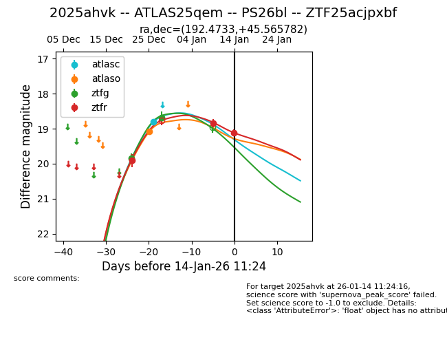
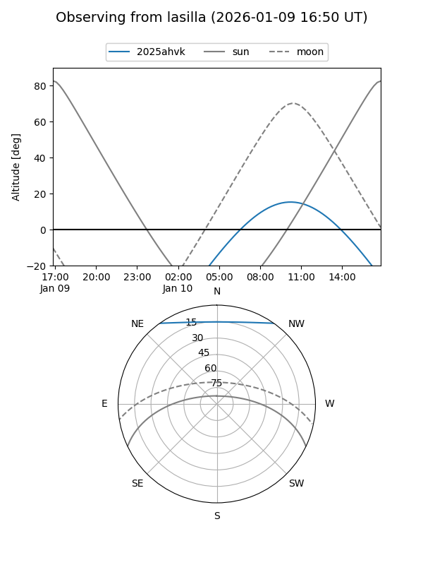
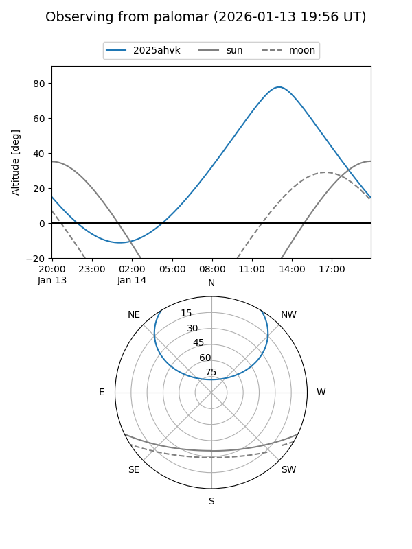
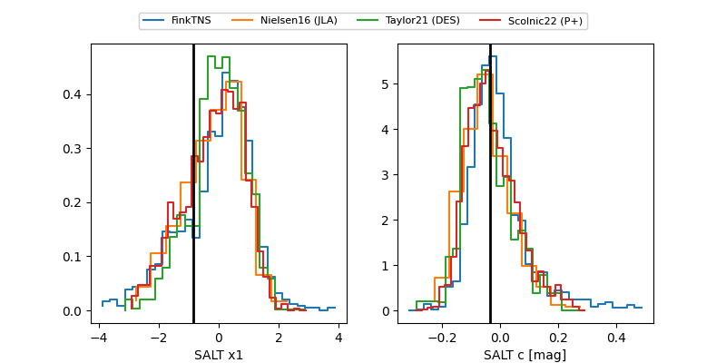

2025ahvk
Target 2025ahvk at 2025-12-22 20:48
Aliases and brokers:
FINK: fink-portal.org/ZTF25acjpxbf
Lasair: lasair-ztf.lsst.ac.uk/objects/ZTF25acjpxbf
ALeRCE: alerce.online/object/ZTF25acjpxbf
TNS: wis-tns.org/object/2025ahvk
YSE: ziggy.ucolick.org/yse/transient_detail/2025ahvk
alt names
ZTF25acjpxbf (ztf,fink_ztf)
2025ahvk (tns,yse)
Coordinates:
equatorial (ra, dec) = 192.4733,+45.56578
equatorial (HMS+DMS) = 12:49:53.59,+45:33:56.82
galactic (l, b) = (123.7867,+71.55991)
Flags:
Photometry:
last ztfr=19.90
1 ztfr detections
Lightcurve

Visibility


Additional plots
